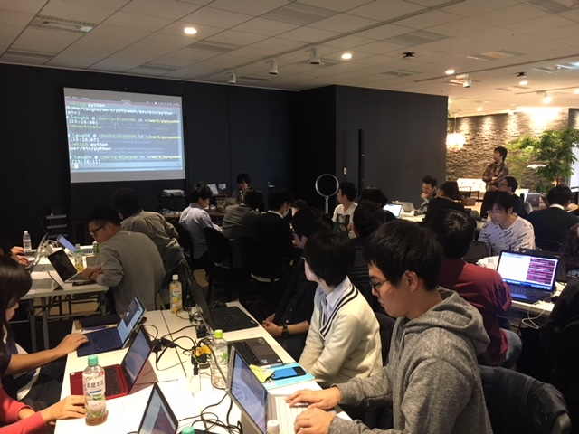
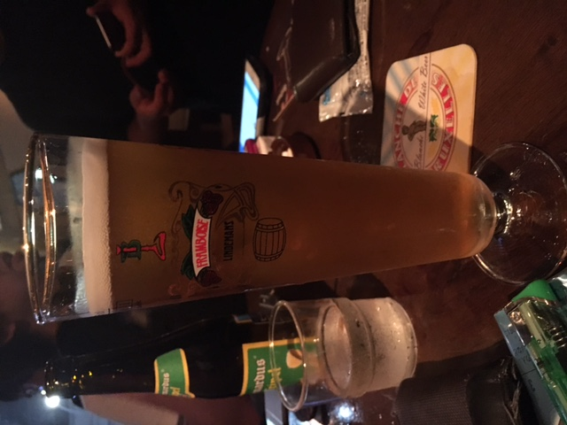
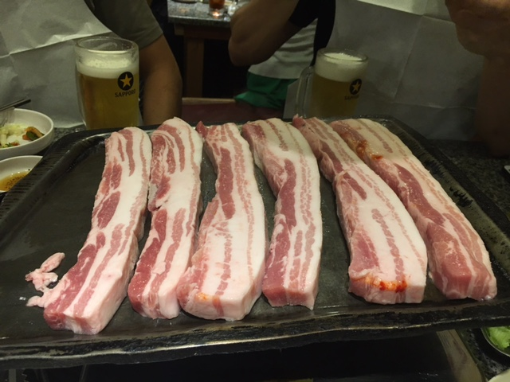

Python入門者向けハンズオン #6 でTAしてきた #PyNyumon¶
Python入門者向けハンズオン #6 - connpass
前回のPyNyumon に引き続き2回目のTAで、 今回は講師の @laughk さんのフルアシスタント担当でした。
いろんなことが得られてよかったという思いと、全然だなーという至らなさと両方味わった感ありますが、なにはともあれ無事に終わってよかった。
以下、イベント前〜後に思ったこと、起きたことの雑多なメモです。
よかったこと¶
運営的なあれこれを体験できた¶
前回TAとして参加して1対1で説明したり、GitHubにある資料にPR送ったりとかはしたけど、 今回は講義中に1対N(参加者全員)という場面も経験できたり、資料も自分がPR送るだけでなく他の人のレビューとか、アシストとかもしてやることが広がった。
当日頑張ればというところだけだったのが、事前準備からアフターまでそれなりに考えてやる経験ができたのはよかった。
わりとイベントが好評だった¶
アンケートでも好評だったみたいです。イベント後の飲みでも「いい掛け合いだったよ」とか言ってもらえて頑張ったかいあったかなーと思いました。
Pythonの便利ポイントや使いみちとか理解してもらえた¶
仮想環境の便利さや使い分け、PyCharmの使い方、いつPythonを使うかみたいな標準やデファクト・スタンダードになっているものの利点を伝えたときに「なるほどー」となってもらえたのはよかった。
他にも pip install requests したとき依存ライブラリのインストール途中で止まるので依存がないバージョンのrequestsを入れてもらったりして、参加者がそこでストップしてしまわないようにできたかなー。
改善したかった・したいこと¶
講義資料とかのメンテのしやすさ向上¶
資料にPR1つ送るにしても、「それ昨日までずっと話題に上がってたのに」というのを毎回最初から説明するのは地味に骨が折れる。GitHubのリポジトリにissuesやPRのテンプレート機能とか、Contributing Guidelinesを用意しておくと少しはよくなるのかな。
読まない人は読まないけど、「ここ読んで」といえる準備をしておけば後が楽になるはずとは思った。
端的に説明するスキル¶
詳細に説明しようとすると140文字じゃ足りないものに対して「どうなんですか？」と聞かれるのはむずかしい。。。話の優先度とかもあるし、そもそも違う話だろっていうのもある…
前提を共有するの大事。スクレイピングをしたいとして、どのサイトのどの部分をどのように取得したいのかを知らずに回答することは難しい。(まあそれがちゃんと質問できる人は自力でできるはずなのでそもそも聞いてこないだろっていうのもあるかも)
講師・アシスタントのはじめて問題¶
実務でコード書いてたり、本書いたことあったりと力はあるはず(？)の教える側が、「運営」としてどうまわすかって結構難しいなーと。どこで切り上げていいかわからず待ってしまったり、ずるずる進めてしまったりという部分があったかなと。少なくとも、講師とアシスタントには最初からマイクが両方にあったほうがよかったな。
JobChangeして半年が過ぎました¶
無事、3ヶ月の試用期間が終わり本採用になってました。
今年の4月から 某イベントサイト を運営しているPython企業でPythonとかDjangoを書いてます。Twitterでぼちぼち呟いてたり、お会いしてる方には伝えたりしてましたので今更感がすごいですね。 最初は猛者ばかりの環境に来て、3日で屍になるかと思ってましたがなんとか生きています。
入社に至る経緯¶
https://twitter.com/kashew_nuts/status/826297725670940672
↑こんなつぶやきをしてみる。
Twitter経由で声をかけられる
会社訪問して面接する
入社試験受ける
内定GET!
その節は皆さんありがとうございました。
転職してどうか¶
とにかく”働きやすい”会社だなと感じています。個人的に「ないと困る」「あって当たり前」というものから、「あったらいいのにな」と思うようなことまでが普通にあるので、とにかくストレスを感じにくいです。例を挙げると、
Pythonで仕事ができる
選択できる勤務時間
時間休の概念
週5リモートワーク可
OSSに貢献するのが普通な文化
好きな開発環境・エディタが使える (PyCharm, Vim, Emacs, etc…)
ソフトウェアのライセンス費がでる
デュアルディスプレイ
GitHubが使える
CI環境がある
Slackでオンラインコミュニケーション
仕事で困ったことがあっても相談できる相手がいる
スタンディングデスク/フリーアドレス席が使える
無料Redbull/ウォーターサーバー/各種ドリンク
ストレスコントロールができる同僚たち
電話に出る必要がない
常に学んで良くしていこうという姿勢だけでなく実行していく文化がある
服装自由
無駄な会議や稟議が必要ない
etc…
実感できていないところがあるだけでまだある気がしています。
リモートワークについて¶
転職するにあたり気になってたのがこれです。会社にいるメリット・デメリットと、リモートで仕事できるメリット・デメリットがそれぞれありますが、リモートを選択できる自由があるというがすごく良いです。
リモートワークで感じたメリット¶
台風や雨の日に出社しなくて良い。
スキマ時間に病院行ける。
宅配の荷物を受け取れる。
家の雑事を片付けられる。
起きたらすぐ仕事できるし、仕事終わったらすぐ寝れる。
満員電車に乗らなくて良い (徒歩通勤なのであれですが)
リモートワークで感じたデメリット¶
会社にいれば1日1本飲めるRedbullが飲めない…
家にはウォーターサーバーがない…
出社や退社するついでにいけたはずの買い物や運動しに移動するのが面倒 (←アカン)
目標とか¶
せっかくPythonの会社に入ったのでPythonたくさん書いてPyConで発表できるくらいになりたいですね。会社はPythonやらDjangoやら強い人ばかりなので、まずはその辺をしっかり身につけたい。
おまけ¶
内定の提示を受けたときのTweetがこちら。
https://twitter.com/kashew_nuts/status/834302571401531394
いつでも転職祝いは受けつけています！ http://amzn.to/2lwqVSJ
PyConJP2017に参加しました #pyconjp¶

4回目のPyCon参加になりました。今回はいくつか目標を立ててました。
Keynoteを2つとも聞く
Keynote以外の英語のセッションも聞く
はじめましての人もお久しぶりの人も話す
2次会に行く
セッションに参加するだけでなく、メディア企画やポスターセッションのようなコンテンツも楽しむ
結論としては全部達成できましたかね(o・ω・o)
contents
RejectConについて¶
PyConの前夜祭ということで「非公式」で行われました。

話し終わったたびに「何故Rejectされたのか？」と発表者に分析してもらっていたのですが、全体的に「Python成分が薄い」というのが多かったのが印象的でした。 人数が少なめなのが残念でしたが、他にも強力な裏番組が2つあったりしたのとちょっと直前だったせいなのかな…と。
発表内容的にはためになる話も多かったです。年々PyConに応募する内容のレベルも上がってるんだなーと思いました。
After Partry¶
Day1: Party以降¶
お酒の充実度合いがすごかった。ビールサーバー、クラフトビール、日本酒と充実しまくりで堪能してた。
@y__mattuさん にあった。 @soogieさん に紹介してもらったけど、R界隈のホープらしい。曰く「Rでできないことはパンダスにはないとのこと。」でもPythonはPythonでRとかサスにはできないところがあったり、コミュニティがとても楽しいとのこと。これは良かった。
@chezouさん さんの御尊顔を拝見した。すごい謙遜されていたけど、普段からやってるからあえて言わないんだろうな感あった。
@yaegassyさん とか、 @lambdalisueさん とか、 @rokujyouhitomaさん とか人をつないだり、つなげてもらったり、久しぶりの人に挨拶したりしてた。参加するたびにこうゆう機会増えていくの楽しいしおもしろい。
キャリアの話とか、あのときは実はねみたいな話を聞けたりとかセッションを聞く以外の話をできるのは楽しい。
某氏にPEP8 3回読んで自分のコード見てまたPEP8読んでと伝えた
裏PyCon楽しかった
Day2: 有志の二次会¶
肉のボリュームがすごかった。翌日のスプリントにいくための活力は得られたかな。
感想¶
今回はいろいろと「実は…」みたいな会話をすることが多かったPyConだった。
それを聞けるようになったり、言えるようになったのは変化だったり成長だったりするんだろうなと思う。
「聞いて」「見た」なら「自分で確かめる・行動する」フェースが必要だと感じた。
自分の知識不足や発表者の意図を意図通りに受け取れずに誤解・誤読することはあると思う。
先人の知恵は活用しつつも、自分で確かめたり行動する必要が「ある」。
発表は基準にはなる。一歩先に行ったり、正しく理解するには自分で動くことが必要。
セッション30分は聞きやすいけど、せっかくのPyConなんだからもっと時間をかけて深いところも聞きたかった。
ひとつのテーマについて少し深く話そうとしたら軽く10分20分は使うので、せめて中級者以上のセッションは4〜50分くらいほしい。
発表者も30分では話しきれないとわかっているのか、発表を通して後日自分で勉強したり情報を探したりすることができるようなキッカケになるような話し方をしてくれる人が多かったのがありがたかった。